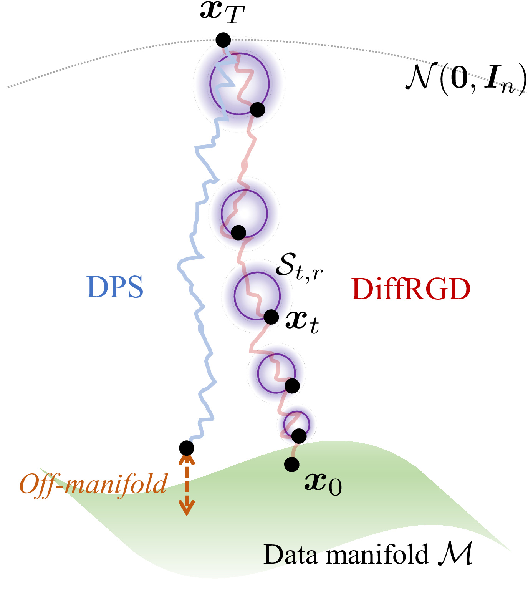
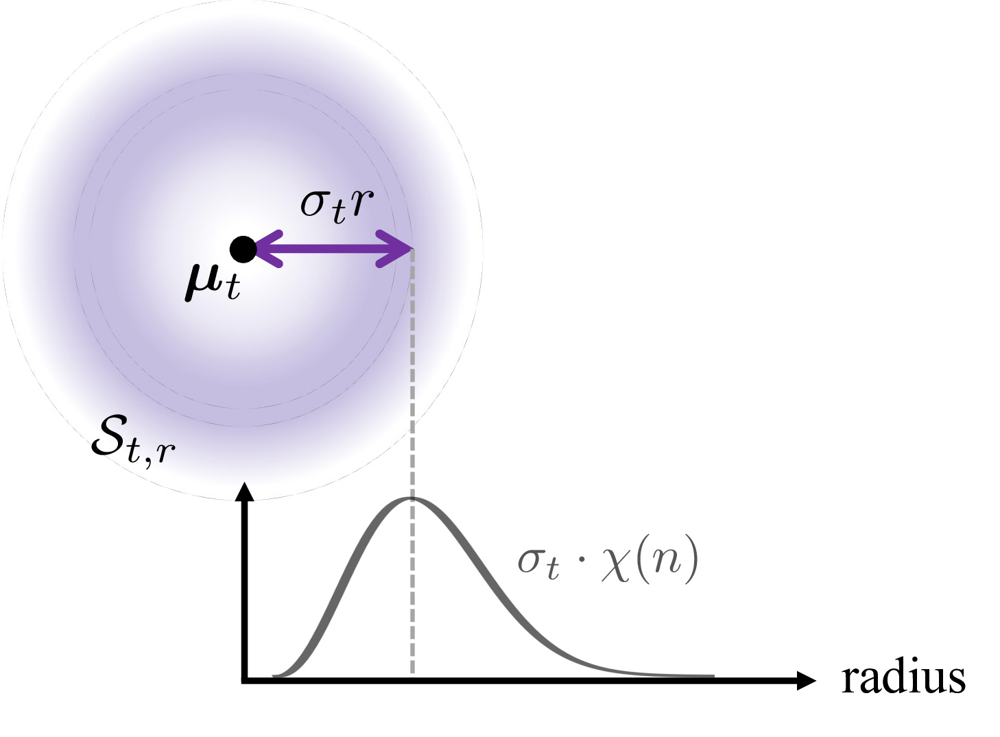
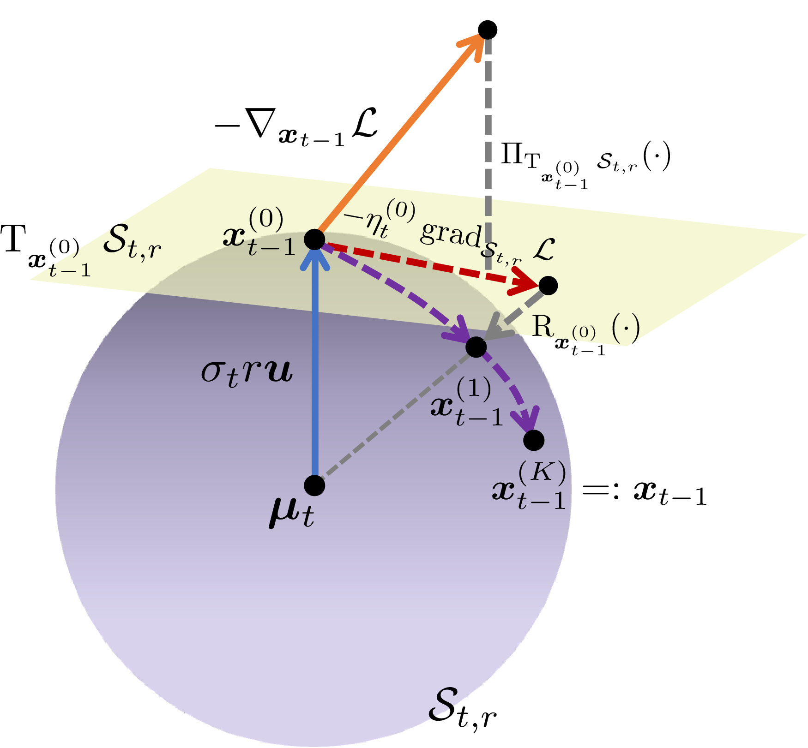
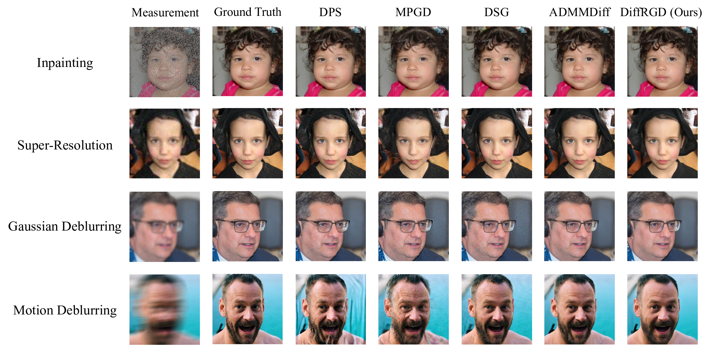
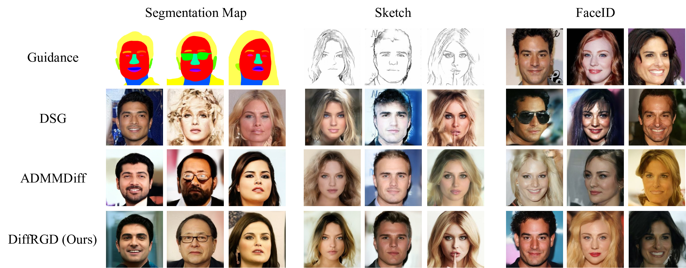

Recently, diffusion models have been widely adopted in generative modeling and have served as foundational models for many image generation tasks. To control the generation without costly re-training or fine-tuning, many works seek inference-time guidance methods to steer the latent via a differentiable objective at inference time. However, these methods cannot effectively preserve the original Gaussian distribution because they introduce distributional drift, thereby degrading the sample quality. To address this gap, we propose DiffRGD, a distribution-aware guidance framework that explicitly preserves the latent Gaussian structure. DiffRGD formulates each sampling step as a constrained optimization problem on a spherical manifold induced by the latent Gaussian distribution, and solves it efficiently via Riemannian Gradient Descent (RGD). DiffRGD is a plug-and-play method that can be seamlessly integrated into any pre-trained diffusion model. Extensive experiments demonstrate that DiffRGD outperforms previous methods in most image restoration and conditional generation tasks.
Most existing inference-time guidance methods inject external gradients directly into the sampling process, formulating the per-step update as:
Because the neighborhood $\mathcal{N}(\hat{\bm{x}}_{t-1})$ is defined in the ambient Euclidean space, these methods cannot preserve the stepwise Gaussian latent distribution, causing distributional drift that ultimately degrades sample quality. DiffRGD addresses this by performing gradient updates directly on a distribution-induced spherical manifold.

Starting from a noisy latent $\bm{x}_t$ at timestep $t$, DDIM defines the next-step latent $\bm{x}_{t-1}$ as sampling from a Gaussian distribution:
where the mean is defined by
and the predicted clean sample is estimated by Tweedie's formula:
At each diffusion timestep $t$, the latent $\bm{x}_t \sim \mathcal{N}(\bm{\mu}_t, \sigma_t^2 \bm{I}_n)$ follows an isotropic Gaussian distribution centered at $\bm{\mu}_t$. It admits a polar decomposition:
where $r \sim \chi(n)$ is a chi-distributed random variable with $n$ degrees of freedom, and $\bm{u} \sim \operatorname{Unif}(\mathbb{S}^{n-1})$ is a unit vector uniformly distributed on the sphere. $r$ and $\bm{u}$ are statistically independent.
By fixing the sampled radius $r$, we construct a spherical manifold that captures the Gaussian structure as the feasible set for RGD:

We formulate the per-timestep guidance as a constrained optimization problem on $\mathcal{S}_{t,r}$:
To solve the constrained optimization on $\mathcal{S}_{t,r}$, we employ RGD with three geometric operations:

The Riemannian gradient and retraction-based update at each inner iteration $k$ are:
We evaluate on four inverse problem tasks using 150 images from FFHQ 256×256. Each task is formulated as a noisy linear inverse problem $\bm{y} = \mathcal{A}(\bm{x}) + \bm{n}$, $\bm{n} \sim \mathcal{N}(\bm{0}, 0.05^2\bm{I})$, with guidance objective $\mathcal{L}_\text{inv}(\hat{\bm{x}}_0, \bm{y}) = \|\mathcal{A}(\hat{\bm{x}}_0) - \bm{y}\|_2$. Tasks: (i) Inpainting (70% random mask), (ii) Super-Resolution ×4 (bicubic), (iii) Gaussian Deblurring (31×31, $\sigma=3.0$), (iv) Motion Deblurring (61×61, intensity 0.5).
Table 1. Quantitative results using DDIM 1,000 sampling steps on 150 samples from the FFHQ 256×256 validation set. Metrics averaged over 100 bootstrap runs. Bold = best, underline = second-best, * = statistically significant improvement ($p < 0.05$) over second-best.
| Task | Method | Venue | PSNR ↑ | SSIM ↑ | LPIPS ↓ | FID ↓ |
|---|---|---|---|---|---|---|
| Inpainting | DPS | ICLR 2023 | 30.44 | 0.863 | 0.153 | 42.68 |
| MPGD | ICLR 2024 | 27.51 | 0.724 | 0.256 | 68.24 | |
| DSG | ICML 2024 | 31.03 | 0.866 | 0.144 | 36.30 | |
| ADMMDiff | CVPR 2025 | 32.38 | 0.899 | 0.119 | 29.52 | |
| DiffRGD (Ours) | ECCV 2026 | 34.04 | 0.926 | 0.096 | 21.88 | |
| Super-Res. ×4 | DPS | ICLR 2023 | 26.03 | 0.727 | 0.260 | 80.05 |
| MPGD | ICLR 2024 | 24.40 | 0.614 | 0.354 | 101.50 | |
| DSG | ICML 2024 | 26.71 | 0.737 | 0.256 | 74.67 | |
| ADMMDiff | CVPR 2025 | 26.48 | 0.712 | 0.297 | 96.69 | |
| DiffRGD (Ours) | ECCV 2026 | 27.77 | 0.783 | 0.220 | 63.94 | |
| Gaussian Deblur | DPS | ICLR 2023 | 25.88 | 0.721 | 0.237 | 69.38 |
| MPGD | ICLR 2024 | 24.07 | 0.576 | 0.328 | 95.12 | |
| DSG | ICML 2024 | 27.45 | 0.751 | 0.259 | 75.85 | |
| ADMMDiff | CVPR 2025 | 26.57 | 0.757 | 0.226 | 79.30 | |
| DiffRGD (Ours) | ECCV 2026 | 26.80 | 0.757 | 0.218 | 63.83 | |
| Motion Deblur | DPS | ICLR 2023 | 24.47 | 0.685 | 0.271 | 80.75 |
| MPGD | ICLR 2024 | 23.15 | 0.569 | 0.357 | 106.99 | |
| DSG | ICML 2024 | 26.80 | 0.709 | 0.290 | 87.96 | |
| ADMMDiff | CVPR 2025 | 27.26 | 0.778 | 0.222 | 72.92 | |
| DiffRGD (Ours) | ECCV 2026 | 25.84 | 0.736 | 0.250 | 72.26 |

We evaluate on three conditional generation tasks from CelebA-HQ 256×256: segmentation map, sketch, and FaceID guidance. Given a conditional image $\bm{y}$, we extract task-specific features via a pre-trained model $\psi_\theta$, and define the guidance loss as:
Table 2. Quantitative results using DDIM 100 sampling steps on 150 samples from CelebA-HQ 256×256. Metrics averaged over 100 bootstrap runs. * = statistically significant improvement ($p < 0.05$).
| Method | Segmentation Map | Sketch | FaceID | ||||||
|---|---|---|---|---|---|---|---|---|---|
| mIoU ↑ | FID ↓ | KID ↓ | Sketch-$\ell_2$ ↓ | FID ↓ | KID ↓ | FaceID-$\ell_2$ ↓ | FID ↓ | KID ↓ | |
| FreeDoM | 0.622 | 156.02 | 0.057 | 30.85 | 101.90 | 0.017 | 0.557 | 127.05 | 0.032 |
| DSG | 0.750 | 117.48 | 0.028 | 21.36 | 107.00 | 0.024 | 0.340 | 95.27 | 0.014 |
| ADMMDiff | 0.758 | 101.86 | 0.031 | 30.82 | 97.52 | 0.014 | 0.346 | 100.81 | 0.014 |
| DiffRGD (Ours) | 0.804 | 96.10 | 0.026 | 19.48 | 87.82 | 0.012 | 0.303 | 93.80 | 0.011 |

@inproceedings{liao2026diffrgd,
title = {DiffRGD: An Inference-Time Diffusion Guidance
Through Riemannian Gradient Descent},
author = {Liao, Jia-Wei and Peng, Li-Xuan and Yueh, Mei-Heng
and Sun, Min and Chou, Cheng-Fu and Chen, Jun-Cheng},
booktitle = {European Conference on Computer Vision (ECCV)},
year = {2026},
}